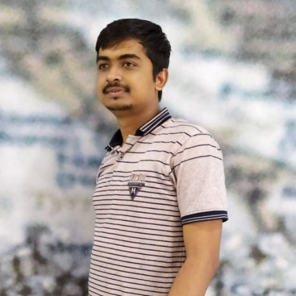

|
 |
Ashok UrlanaCurrently, I am working as a Researcher at TCS research. Earlier, I did my Masters in NLP at International Institute of Information Technology-Hyderabad, under the supervision of Manish Shrivastava. Previously I worked with Chakravarthi Jada My research topic is on text summarization for Indian languages. I am also interested in bio-inspired algorithms and its related topics. [Google Scholar] [Semantic Scholar] [Linkedin] [GitHub] [E-mail: ashok.urlana@research.iiit.ac.in] |
| TCS Research | August 2023 - present | Researcher |
| IIIT-Hyderabad | July 2020 - July 2023 | Masters by Research |
| IIIT-Hyderabad | May 2019 - June 2020 | Research Intern |
| RGUKT-Nuzvid | June 2014 - May 2018 | Bachelors Degree |